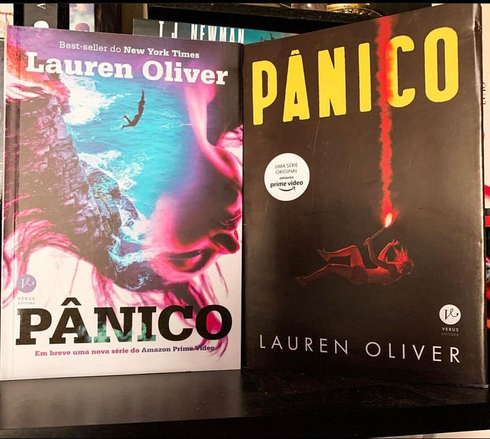

Pânico
(Lauren Oliver -Verus)
Sem nota
O Livro de Lauren Oliver inspirou a série do Pime Vídeo:”Panic” que conta com 10 episódios e indico para todos que gostam do tema (depois de ler, claro). Mas,aqui o nosso foco é o livro e a pregunta que fica é : Até onde você iria para escapar da sua pacata vida?
O Pânico começou como muitas coisas naquela cidadezinha claustrofóbica: era verão e não havia mais nada para fazer...Heather jamais pensou em competir no Pânico, um jogo perigoso disputado pelos formandos do ensino médio, em que as apostas são altas e a recompensa é ainda maior. Ela nunca se considerou destemida, o tipo de pessoa que lutaria para se destacar. Mas, quando encontra algo ― e alguém ― por que lutar, descobre que é mais corajosa do que imaginava.Dodge nunca teve medo do Pânico. O segredo que ele guarda vai servir de estímulo e levá-lo até o fim do jogo, ele tem certeza disso. O que Dodge não sabe é que ele não é o único com um segredo. Todo mundo tem um motivo para jogar.Para Heather e Dodge, o jogo trará novas alianças, revelações inesperadas e a possibilidade do primeiro amor ― e o conhecimento de que, às vezes, aquilo que tememos é o que mais precisamos.
Com uma premissa bem interessante a narrativa já começa com ação, mostrando como é o jogo e já adianto que: vocês podem esperar ação, mistério, segredos e até aquela pitadinha de romance. Tudo se passa em Carp um cidadezinha bem pacata no interior de Nova York onde claramente não havia muitos acontecimentos ou coisas pra se fazer até que surge em um verão: Pânico - um jogo perigoso mas com um grande prêmio.
Lauren consegue manter a trama, principalmente a ação e temos personagens bem construídos como a própria Heather.
A autora que já é conhecida por seus livros para o público infanto-juvenil e algumas distopias, sabe muito bem como conduzir uma trama.
Senti falta no aprofundamento de alguns personagens e suas histórias e confesso que quando comecei a leitura tive dificuldades em engatar e me concentrar. Mas no geral é um livro bom, com ritmo frenético.